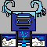

Os Villareanos são uma raça guerreira de piratas que viajavam pelos 7 mares do mundo quadrado de Minecraft, junto de seu capitão Steve, o conquistador
Steve era uma lenda pois havia derrotado o Dragão do Fim e o Wither Boss, os monstros que dominavam o mundo
Ele trouxe muita paz para os aldeões e eles prosperaram durante muito tempo

Até que Warden, o rei das profundezas despertou
E ele trouxe o caos e corrupção para os 3 mundos de minecraft
Steve tentou o impedir, porém, sofreu um ataque sônico que o deixou à beira da morte
Após 2 anos, Steve retornou, junto com uma tripulação de piratas, e agora, ele busca sua vingança contra o, agora Rei do mundo, Warden
Ajude Steve